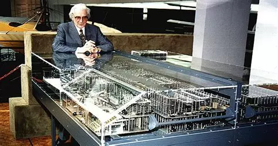
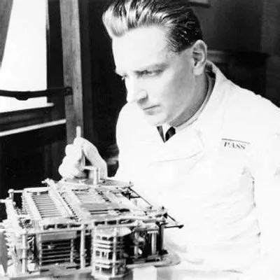
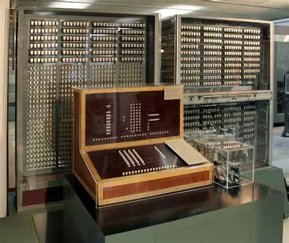
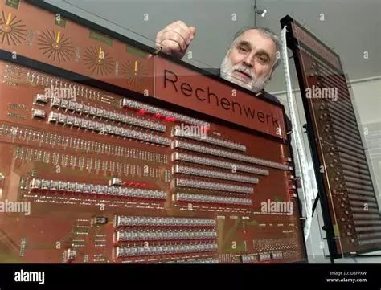
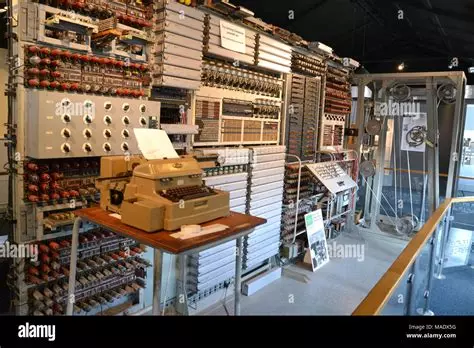
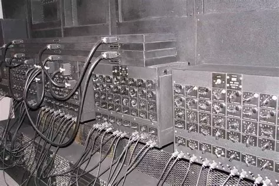
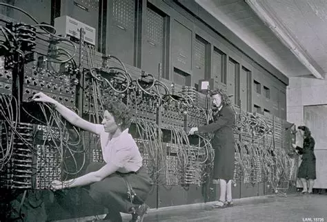
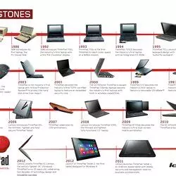
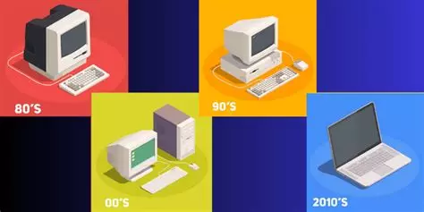
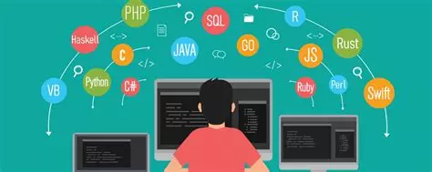

L'HISTOIRE DE L'INFORMATIQUE
INTRODUCTION :
L'histoire de l'informatique a commencé bien avant la discipline moderne
des sciences informatiques, généralement par les mathématiques ou la physique.
Quand on parle d’informatique, on pense souvent ordinateur. Pourtant, l’informatique existe depuis
plus longtemps. Il s’agit avant tout de méthodes techniques pour améliorer le calcul. Ensuite sont apparues
les manipulations de données non calculatoires, et la recherche en intelligence artificielle.
Konrad Zuse et le Z1 !
Konrad Zuse est né le 22 juin 1910 à Berlin puis décède à 85ans le 18 décembre 1995 à Hunfeld.
En 1938, Konrad Zuse termine la Z1, considérée comme le premier ordinateur programmable au monde, qu'il construit
avec des fonds privés et qui intègre des éléments modernes tels qu'une mémoire et une unité de contrôle.Cependant, il était peu fiable en fonctionnement.


C'est l'un des premiers ordinateurs mécaniques et programmables, capable de calculer le déterminant d'une matrice 3x3, bien qu'il ait présenté des
problèmes de fiabilité mécanique.
LE ZUSE 3: (Plankalkül)
En plus du Z3, Konrad Zuse a conçu le Plankalkül, le premier langage de programmation au monde, ainsi que d'autres calculateurs comme le Z1 et le Z2,
qui ont contribué à l'évolution de l'informatique.


Plankalkül est le premier langage de programmation de haut niveau, conçu par Konrad Zuse entre 1942 et 1946,
tandis que le Z3, achevé en 1941, est le premier calculateur électromécanique Turing-complet.
À l'époque, Zuse ne fit aucune communication scientifique à ce sujet, pour diverses raisons : la Seconde Guerre mondiale faisait rage,
et il consacrait tous ses efforts à la conception et à la commercialisation de son ordinateur, le Zuse 3.
Le Colossus !
L'ordinateur Colossus est le premier calculateur électronique programmable au monde, conçu par Tommy Flowers
à Bletchley Park pour déchiffrer les messages codés de la machine Lorenz pendant la Seconde Guerre mondiale,
réalisant jusqu'à 5 000 opérations par seconde.

Colossus est une série de calculateurs électroniques fondés sur le système binaire. Le premier, Colossus Mark 1,
est construit en l’espace de onze mois et opérationnel en décembre 1943, par une équipe dirigée par Thomas “Tommy” Flowers et installé près de Londres, à Bletchley Park
: constitué de 1 500, puis 2 400 tubes à vide.
L'ENIAC !
L'ENIAC (acronyme de l'expression anglaise Electronic Numerical Integrator And Computer) est en 1945 le premier ordinateur Turing-complet entièrement électronique.
Il peut être programmé pour résoudre, en principe, tous les problèmes de calcul numérique. Il est inauguré en 1946 a l'université de Pennsylanie.


l’ENIAC est à partir de 1947 reconverti en ordinateur à programme enregistré. L'architecture de l'ENIAC, décidée et gelée en 1943, est novatrice par son parallélisme, sa vitesse et sa Turing-complétude,
mais ne permet initialement pas d'enregistrer un programme en mémoire ;
la programmation se fait donc par câblage.
Après l'ENIAC, Eckert et Mauchly fonderont une société, l'Eckert–Mauchly Computer Corporation (en), où ils produiront en 1949 leur premier ordinateur : le BINAC.
La firme sera rachetée l'année suivante par Remington Rand pour devenir Univac.
La stucture de Von Neumann
La structure de von Neumann se compose de quatre composants principaux : l'unité arithmétique et logique (UAL), l'unité de contrôle, la mémoire centrale (qui stocke à la fois instructions et données)
et les dispositifs d'entrée-sortie, avec le principe clé que programmes et données partagent la même mémoire.

Cette architecture est appelée ainsi en référence au mathématicien John von Neumann, qui a élaboré en juin 1945 dans le cadre du projet EDVAC[1]
la première description d’un ordinateur dont le programme est stocké dans sa mémoire.
Herman Goldstine (un collègue de John von Neumann) fit circuler une description inachevée, intitulée « Première ébauche d'un rapport sur EDVAC », basée sur les travaux d'Eckert et Mauchly, sous le seul nom de von Neumann.
Le document a été lu par des dizaines de collègues de von Neumann en Amérique et en Europe, et a inspiré plusieurs machines en construction.
Les ordinateur et leur evolution !
L'histoire des ordinateurs commence au milieu du xxe siècle. Les premiers ordinateurs ont été réalisés après la Seconde Guerre mondiale.
La deuxième génération d'ordinateurs est basée sur l'invention du "transistor" en 1947. La troisième génération d'ordinateurs est celle des ordinateurs à circuit intégré qui ont été inventés par Jack Kilby en 1958.
C'est à partir de cette date que l'utilisation de l'informatique a explosé.


Dans les années 1970, à la suite de l'invention du microprocesseur, les ordinateurs personnels apparaissent. Dans les années 2000, le smartphone apparaît et commence à remplacer l'ordinateur personnel à la maison.
Enfin,dans les années 2010, avec la généralisation d'Internet, les services informatiques migrent dans le cloud.
LES LANGAGES DE PROGRAMMATION
En 1951, le premier langage de haut niveau, nommé A-0, a été inventé par Grace Murray Hopper, permettant de générer des programmes binaires à partir de codes sources, pour l'ordinateur UNIVAC I.

Les années 1960-1970:
Les ordinateurs ont connu une croissance exponentielle, ce qui a conduit à la création de nouveaux langages pour répondre aux besoins constants des programmeurs.
En 1964, John Kemeny et Thomas Kurtz ont créé BASIC (Beginner’s All-purpose Symbolic Instruction Code), un langage simple conçu pour les débutants en informatique.
Les années 1980-1990: